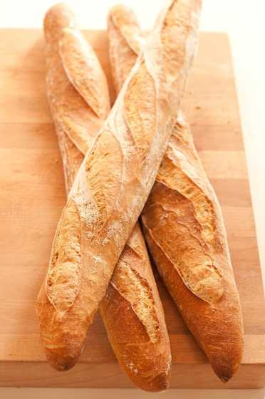

33CAFE トラント-トロワ カフェ ・ 掛川市宮脇
「苦手」が、ひとつ
「好き」になるコーヒーを。
パンの香りと、一杯のコーヒー。コーヒーが少し苦手な方にも、ゆっくり向き合ってもらえるお店です。
お店のこと
苦手を少しでも好きになってもらう、コーヒー体験。
33CAFE(トラント-トロワ カフェ)は、静岡県掛川市宮脇にあるパンとコーヒーのお店です。公式Instagramのプロフィールには「苦手を少しでも好きになってもらうコーヒー体験をご提供しています」と書かれています。
パンの販売は朝8時からと案内されており、パンの冷凍販売も始められたそうです。定休日は月曜日と案内されています。
店名の「33」の意味や由来は確認できていないため、ここでは触れません。見出しの言い回しは制作側のイメージです。

メニュー
パンと、コーヒー。
写真はイメージ(フリー素材)です。お店で提供しているものそのものではありません。





コーヒーの時間
ゆっくり、一杯ぶんだけ。
写真はイメージです。コーヒーの種類や淹れ方は確認できていないため記載していません。


口コミ
こんな声が届くお店でありますように。
イメージ例
コーヒーが苦手でしたが、ここの一杯なら最後まで飲めました。パンの香りも幸せでした。
イメージ例
朝からパンが買えるのがうれしい。休みの日の楽しみになっています。
イメージ例
冷凍のパンを家で焼いて、お店の時間を思い出しています。
上記は制作側が作成したイメージ例で、実在のお客様の声ではありません。
アクセス
お店のご案内
| 所在地 | 〒436-0086 静岡県掛川市宮脇2丁目13番2 |
|---|---|
| 電話 | 準備中 |
| 営業時間 | 準備中(パンは8:00からとInstagramに記載) |
| 定休日 | 月曜日(Instagramの記載による) |
| SNS | Instagram @33_cafe__ |
営業時間やメニューは変更されることがあります。最新情報はInstagramをご確認ください。